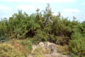
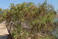
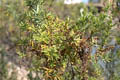
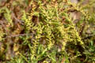
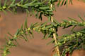
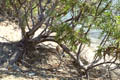
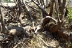

Diagnostic characters
Botany & morphology
Ecology
Distribution
Uses
Perennial undershrubs, 40-80 cm tall. Leaves linear – ovate, caducous. Flowers small.
Leaves small, 1 - 2 x 0.2 - 0.4 mm, semiterete, oblong or ellipsoid or linear – obovate.
Inflorescence in dense globose long spikes.
Flowers minute, regular, bisexual; stamens 5, filaments short; ovary ovoid or orbicular, sessile, adnate below to perianth, stigmas 3.
Fruit spongy utricle included in perianth.
Stems much-branched from the woody base, often reddish.
Succulent halophytes of the back-mangroves zone. Common on salt marshes and tidal blanks.
India, Sri Lanka, Malaysia, Australia, N. Africa and N. America.
Tender shoots used as leaf vegetable.
Top of the page